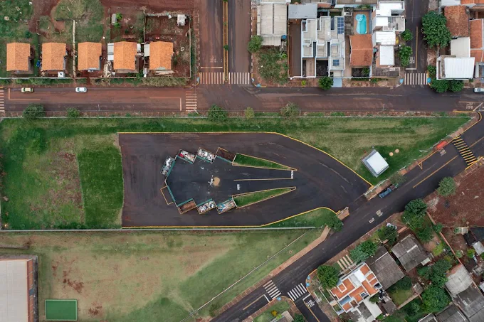
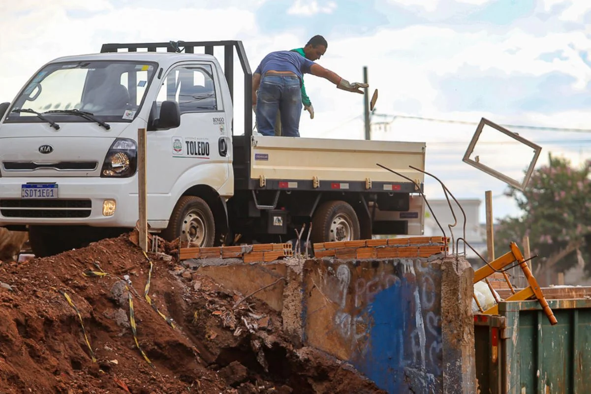
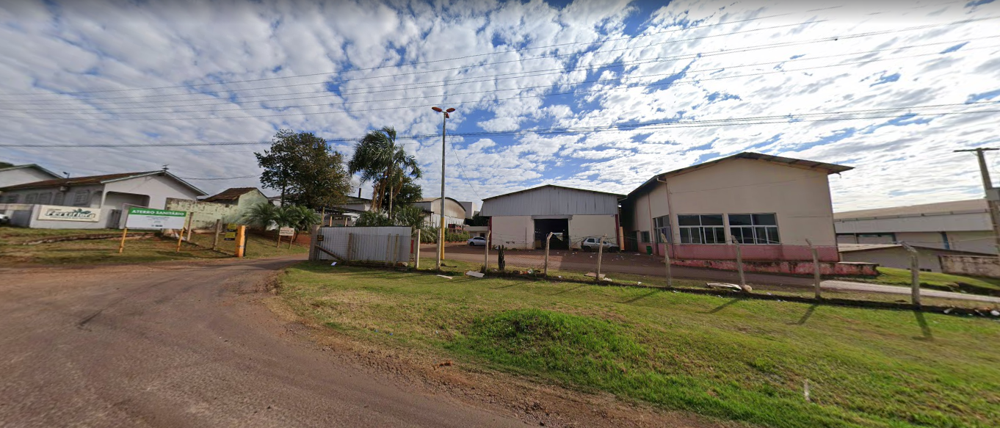
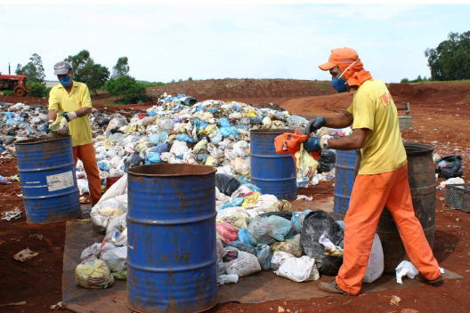
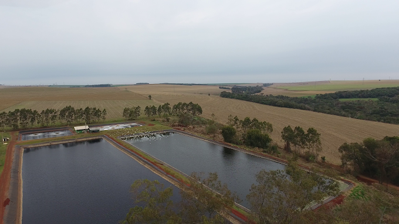
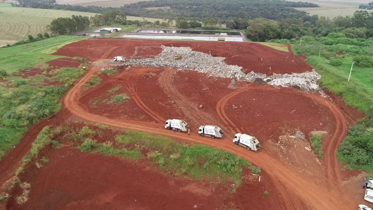
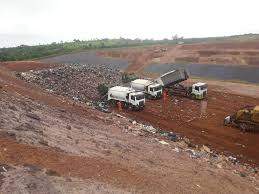

Locais para descarte:



Ecoponto Santa Clara IV
Carregando status...Horário de funcionamento: Segunda a Sexta-feira, das 8h às 17:30h; Sábados, das 8h às 12h.
Endereço: R. Jandir Domingues Bazei - Res. Santa Clara, Toledo - PR


Aterro Sanitário Municipal - Toledo PR
Carregando status...Horário de funcionamento: Segunda a Sexta-feira, das 8h às 17:30h; Sábados, das 8h às 12h.
Endereço: Rodovia PR–317, Km 07, sentido Ouro Verde do Oeste, PR.



Aterro Sanitário Municipal - Cascavel PR
Carregando status...Horário de funcionamento: Segunda a Sexta-feira, das 8h às 17:30h; Sábados, das 8h às 12h.
Endereço: Linha xx, S/N, Estr. Rural, Cascavel - PR